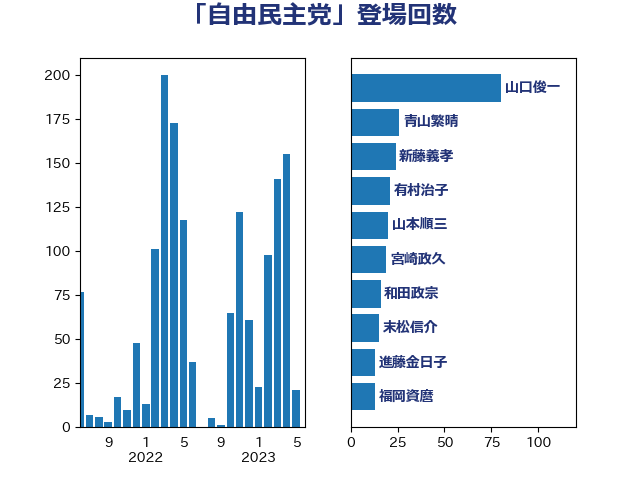

単語「自由民主党」

| 山口俊一 | 自由民主党 | 80 回 |
| 青山繁晴 | 自由民主党 | 26 回 |
| 新藤義孝 | 自由民主党 | 24 回 |
| 有村治子 | 自由民主党 | 21 回 |
| 山本順三 | 自由民主党 | 20 回 |
| 宮崎政久 | 自由民主党 | 19 回 |
| 和田政宗 | 自由民主党 | 16 回 |
| 末松信介 | 自由民主党 | 15 回 |
| 進藤金日子 | 自由民主党 | 13 回 |
| 福岡資麿 | 自由民主党 | 13 回 |
| 清水真人 | 自由民主党 | 12 回 |
| 高木毅 | 自由民主党 | 11 回 |
| 緒方林太郎 | 無所属 | 11 回 |
| 山田賢司 | 自由民主党 | 11 回 |
| 土田慎 | 自由民主党 | 11 回 |
| 足立敏之 | 自由民主党 | 10 回 |
| 松本尚 | 自由民主党 | 10 回 |
| 平沼正二郎 | 自由民主党 | 10 回 |
| 山下雄平 | 自由民主党 | 10 回 |
| 小森卓郎 | 自由民主党 | 10 回 |
| 堀井巌 | 自由民主党 | 10 回 |
| 佐々木紀 | 自由民主党 | 10 回 |
| 谷川とむ | 自由民主党 | 9 回 |
| 西野太亮 | 自由民主党 | 9 回 |
| 藤井比早之 | 自由民主党 | 9 回 |
| 稲田朋美 | 自由民主党 | 9 回 |
| 石田昌宏 | 自由民主党 | 9 回 |
| 石井準一 | 自由民主党 | 9 回 |
| 朝日健太郎 | 自由民主党 | 9 回 |
| 川田龍平 | 立憲民主党 | 9 回 |
| 加田裕之 | 自由民主党 | 9 回 |
| 上野賢一郎 | 自由民主党 | 9 回 |
| 高野光二郎 | 自由民主党 | 8 回 |
| 石川昭政 | 自由民主党 | 8 回 |
| 石井拓 | 自由民主党 | 8 回 |
| 田名部匡代 | 立憲民主党 | 8 回 |
| 片山さつき | 自由民主党 | 8 回 |
| 松川るい | 自由民主党 | 8 回 |
| 工藤彰三 | 自由民主党 | 8 回 |
| 川崎ひでと | 自由民主党 | 8 回 |
| 山谷えり子 | 自由民主党 | 8 回 |
| 山下貴司 | 自由民主党 | 8 回 |
| 勝目康 | 自由民主党 | 8 回 |
| 佐藤啓 | 自由民主党 | 8 回 |
| 高木啓 | 自由民主党 | 7 回 |
| 鈴木馨祐 | 自由民主党 | 7 回 |
| 金子恭之 | 自由民主党 | 7 回 |
| 若林健太 | 自由民主党 | 7 回 |
| 舞立昇治 | 自由民主党 | 7 回 |
| 神田潤一 | 自由民主党 | 7 回 |
| 石原正敬 | 自由民主党 | 7 回 |
| 牧山ひろえ | 立憲民主党 | 7 回 |
| 橋本岳 | 自由民主党 | 7 回 |
| 柴山昌彦 | 自由民主党 | 7 回 |
| 平将明 | 自由民主党 | 7 回 |
| 岩本剛人 | 自由民主党 | 7 回 |
| 寺田稔 | 自由民主党 | 7 回 |
| 宮路拓馬 | 自由民主党 | 7 回 |
| 宮崎雅夫 | 自由民主党 | 7 回 |
| 上田英俊 | 自由民主党 | 7 回 |
| 高橋はるみ | 自由民主党 | 6 回 |
| 阿達雅志 | 自由民主党 | 6 回 |
| 長谷川英晴 | 自由民主党 | 6 回 |
| 金子俊平 | 自由民主党 | 6 回 |
| 臼井正一 | 自由民主党 | 6 回 |
| 石橋林太郎 | 自由民主党 | 6 回 |
| 浮島智子 | 公明党 | 6 回 |
| 杉田水脈 | 自由民主党 | 6 回 |
| 徳永エリ | 立憲民主党 | 6 回 |
| 平口洋 | 自由民主党 | 6 回 |
| 島尻安伊子 | 自由民主党 | 6 回 |
| 小沢雅仁 | 立憲民主党 | 6 回 |
| 國場幸之助 | 自由民主党 | 6 回 |
| 五十嵐清 | 自由民主党 | 6 回 |
| 上野通子 | 自由民主党 | 6 回 |
| 上川陽子 | 自由民主党 | 6 回 |
| 青木愛 | 立憲民主党 | 5 回 |
| 船橋利実 | 自由民主党 | 5 回 |
| 笹川博義 | 自由民主党 | 5 回 |
| 穂坂泰 | 自由民主党 | 5 回 |
| 神谷政幸 | 自由民主党 | 5 回 |
| 神田憲次 | 自由民主党 | 5 回 |
| 石井正弘 | 自由民主党 | 5 回 |
| 盛山正仁 | 自由民主党 | 5 回 |
| 牧原秀樹 | 自由民主党 | 5 回 |
| 熊谷裕人 | 立憲民主党 | 5 回 |
| 本田顕子 | 自由民主党 | 5 回 |
| 木原稔 | 自由民主党 | 5 回 |
| 星北斗 | 自由民主党 | 5 回 |
| 斎藤洋明 | 自由民主党 | 5 回 |
| 小里泰弘 | 自由民主党 | 5 回 |
| 太田房江 | 自由民主党 | 5 回 |
| 古賀友一郎 | 自由民主党 | 5 回 |
| 古川直季 | 自由民主党 | 5 回 |
| 友納理緒 | 自由民主党 | 5 回 |
| 加藤竜祥 | 自由民主党 | 5 回 |
| 今井絵理子 | 自由民主党 | 5 回 |
| 丹羽秀樹 | 自由民主党 | 5 回 |
| 高木宏壽 | 自由民主党 | 4 回 |
| 長谷川淳二 | 自由民主党 | 4 回 |
| 鈴木宗男 | 日本維新の会 | 4 回 |
| 野田国義 | 立憲民主党 | 4 回 |
| 辻清人 | 自由民主党 | 4 回 |
| 赤羽一嘉 | 公明党 | 4 回 |
| 赤池誠章 | 自由民主党 | 4 回 |
| 藤井一博 | 自由民主党 | 4 回 |
| 萩生田光一 | 自由民主党 | 4 回 |
| 義家弘介 | 自由民主党 | 4 回 |
| 竹内譲 | 公明党 | 4 回 |
| 田野瀬太道 | 無所属 | 4 回 |
| 田村貴昭 | 日本共産党 | 4 回 |
| 深澤陽一 | 自由民主党 | 4 回 |
| 津島淳 | 自由民主党 | 4 回 |
| 武部新 | 自由民主党 | 4 回 |
| 横沢高徳 | 立憲民主党 | 4 回 |
| 森屋隆 | 立憲民主党 | 4 回 |
| 森屋宏 | 自由民主党 | 4 回 |
| 新谷正義 | 自由民主党 | 4 回 |
| 岸田文雄 | 自由民主党 | 4 回 |
| 岩田和親 | 自由民主党 | 4 回 |
| 山田美樹 | 自由民主党 | 4 回 |
| 山田宏 | 自由民主党 | 4 回 |
| 山田太郎 | 自由民主党 | 4 回 |
| 山本左近 | 自由民主党 | 4 回 |
| 尾身朝子 | 自由民主党 | 4 回 |
| 小渕優子 | 自由民主党 | 4 回 |
| 小林鷹之 | 自由民主党 | 4 回 |
| 宗清皇一 | 自由民主党 | 4 回 |
| 大野泰正 | 自由民主党 | 4 回 |
| 大西英男 | 自由民主党 | 4 回 |
| 塚田一郎 | 自由民主党 | 4 回 |
| 務台俊介 | 自由民主党 | 4 回 |
| 伊藤忠彦 | 自由民主党 | 4 回 |
| 井林辰憲 | 自由民主党 | 4 回 |
| 中川郁子 | 自由民主党 | 4 回 |
| 中山展宏 | 自由民主党 | 4 回 |
| 世耕弘成 | 自由民主党 | 4 回 |
| 三ッ林裕巳 | 自由民主党 | 4 回 |
| 高鳥修一 | 自由民主党 | 3 回 |
| 高階恵美子 | 自由民主党 | 3 回 |
| 高見康裕 | 自由民主党 | 3 回 |
| 高橋克法 | 自由民主党 | 3 回 |
| 関芳弘 | 自由民主党 | 3 回 |
| 長峯誠 | 自由民主党 | 3 回 |
| 逢沢一郎 | 自由民主党 | 3 回 |
| 越智隆雄 | 自由民主党 | 3 回 |
| 藤木眞也 | 自由民主党 | 3 回 |
| 若林洋平 | 自由民主党 | 3 回 |
| 羽生田俊 | 自由民主党 | 3 回 |
| 細田博之 | 自由民主党 | 3 回 |
| 秋葉賢也 | 自由民主党 | 3 回 |
| 石破茂 | 自由民主党 | 3 回 |
| 石橋通宏 | 立憲民主党 | 3 回 |
| 石井浩郎 | 自由民主党 | 3 回 |
| 田畑裕明 | 自由民主党 | 3 回 |
| 田中昌史 | 自由民主党 | 3 回 |
| 生稲晃子 | 自由民主党 | 3 回 |
| 牧野たかお | 自由民主党 | 3 回 |
| 熊田裕通 | 自由民主党 | 3 回 |
| 浅尾慶一郎 | 自由民主党 | 3 回 |
| 江藤拓 | 自由民主党 | 3 回 |
| 江島潔 | 自由民主党 | 3 回 |
| 永井学 | 自由民主党 | 3 回 |
| 比嘉奈津美 | 自由民主党 | 3 回 |
| 柳本顕 | 自由民主党 | 3 回 |
| 松本洋平 | 自由民主党 | 3 回 |
| 岡本あき子 | 立憲民主党 | 3 回 |
| 山本佐知子 | 自由民主党 | 3 回 |
| 山口晋 | 自由民主党 | 3 回 |
| 小田原潔 | 自由民主党 | 3 回 |
| 宮内秀樹 | 自由民主党 | 3 回 |
| 宮下一郎 | 自由民主党 | 3 回 |
| 大野敬太郎 | 自由民主党 | 3 回 |
| 大塚拓 | 自由民主党 | 3 回 |
| 堀内詔子 | 自由民主党 | 3 回 |
| 堀井学 | 自由民主党 | 3 回 |
| 国定勇人 | 自由民主党 | 3 回 |
| 古川康 | 自由民主党 | 3 回 |
| 古屋範子 | 公明党 | 3 回 |
| 加藤明良 | 自由民主党 | 3 回 |
| 八木哲也 | 自由民主党 | 3 回 |
| 井上貴博 | 自由民主党 | 3 回 |
| 井上信治 | 自由民主党 | 3 回 |
| 中西健治 | 自由民主党 | 3 回 |
| 中田宏 | 自由民主党 | 3 回 |
| 中根一幸 | 自由民主党 | 3 回 |
| 中村裕之 | 自由民主党 | 3 回 |
| 中川貴元 | 自由民主党 | 3 回 |
| 三浦靖 | 自由民主党 | 3 回 |
| 三宅伸吾 | 自由民主党 | 3 回 |
| 高村正大 | 自由民主党 | 2 回 |
| 馬場成志 | 自由民主党 | 2 回 |
| 阿部知子 | 立憲民主党 | 2 回 |
| 長浜博行 | 無所属 | 2 回 |
| 鈴木憲和 | 自由民主党 | 2 回 |
| 野中厚 | 自由民主党 | 2 回 |
| 野上浩太郎 | 自由民主党 | 2 回 |
| 酒井庸行 | 自由民主党 | 2 回 |
| 赤松健 | 自由民主党 | 2 回 |
| 菅家一郎 | 自由民主党 | 2 回 |
| 茂木敏充 | 自由民主党 | 2 回 |
| 船田元 | 自由民主党 | 2 回 |
| 細田健一 | 自由民主党 | 2 回 |
| 簗和生 | 自由民主党 | 2 回 |
| 稲津久 | 公明党 | 2 回 |
| 福田達夫 | 自由民主党 | 2 回 |
| 畦元将吾 | 自由民主党 | 2 回 |
| 甘利明 | 自由民主党 | 2 回 |
| 猪口邦子 | 自由民主党 | 2 回 |
| 瀬戸隆一 | 自由民主党 | 2 回 |
| 滝沢求 | 自由民主党 | 2 回 |
| 泉田裕彦 | 自由民主党 | 2 回 |
| 橘慶一郎 | 自由民主党 | 2 回 |
| 榛葉賀津也 | 国民民主党 | 2 回 |
| 森山浩行 | 立憲民主党 | 2 回 |
| 梶原大介 | 自由民主党 | 2 回 |
| 松野博一 | 自由民主党 | 2 回 |
| 松山政司 | 自由民主党 | 2 回 |
| 松下新平 | 自由民主党 | 2 回 |
| 東国幹 | 自由民主党 | 2 回 |
| 木原誠二 | 自由民主党 | 2 回 |
| 島村大 | 自由民主党 | 2 回 |
| 山田俊男 | 自由民主党 | 2 回 |
| 山本啓介 | 自由民主党 | 2 回 |
| 小西洋之 | 立憲民主党 | 2 回 |
| 小沼巧 | 立憲民主党 | 2 回 |
| 小林茂樹 | 自由民主党 | 2 回 |
| 小林一大 | 自由民主党 | 2 回 |
| 小寺裕雄 | 自由民主党 | 2 回 |
| 宮本周司 | 自由民主党 | 2 回 |
| 大西健介 | 立憲民主党 | 2 回 |
| 大家敏志 | 自由民主党 | 2 回 |
| 塩村あやか | 立憲民主党 | 2 回 |
| 城内実 | 自由民主党 | 2 回 |
| 勝部賢志 | 立憲民主党 | 2 回 |
| 勝俣孝明 | 自由民主党 | 2 回 |
| 伊東良孝 | 自由民主党 | 2 回 |
| 今枝宗一郎 | 自由民主党 | 2 回 |
| 井野俊郎 | 自由民主党 | 2 回 |
| 中谷真一 | 自由民主党 | 2 回 |
| 中西祐介 | 自由民主党 | 2 回 |
| 中曽根康隆 | 自由民主党 | 2 回 |
| 三反園訓 | 無所属 | 2 回 |
| あべ俊子 | 自由民主党 | 2 回 |
| あかま二郎 | 自由民主党 | 2 回 |
| 齋藤健 | 自由民主党 | 1 回 |
| 鷲尾英一郎 | 自由民主党 | 1 回 |
| 鬼木誠 | 立憲民主党 | 1 回 |
| 高市早苗 | 自由民主党 | 1 回 |
| 青木一彦 | 自由民主党 | 1 回 |
| 青山周平 | 自由民主党 | 1 回 |
| 門山宏哲 | 自由民主党 | 1 回 |
| 長谷川岳 | 自由民主党 | 1 回 |
| 長島昭久 | 自由民主党 | 1 回 |
| 長妻昭 | 立憲民主党 | 1 回 |
| 鈴木淳司 | 自由民主党 | 1 回 |
| 野田佳彦 | 立憲民主党 | 1 回 |
| 野村哲郎 | 自由民主党 | 1 回 |
| 辻元清美 | 立憲民主党 | 1 回 |
| 輿水恵一 | 公明党 | 1 回 |
| 越智俊之 | 自由民主党 | 1 回 |
| 赤澤亮正 | 自由民主党 | 1 回 |
| 谷公一 | 自由民主党 | 1 回 |
| 西田昭二 | 自由民主党 | 1 回 |
| 西田昌司 | 自由民主党 | 1 回 |
| 西村明宏 | 自由民主党 | 1 回 |
| 藤川政人 | 自由民主党 | 1 回 |
| 藤原崇 | 自由民主党 | 1 回 |
| 落合貴之 | 立憲民主党 | 1 回 |
| 自見はなこ | 自由民主党 | 1 回 |
| 米山隆一 | 立憲民主党 | 1 回 |
| 笠井亮 | 日本共産党 | 1 回 |
| 秋本真利 | 自由民主党 | 1 回 |
| 神津たけし | 立憲民主党 | 1 回 |
| 礒崎哲史 | 国民民主党 | 1 回 |
| 石原宏高 | 自由民主党 | 1 回 |
| 矢倉克夫 | 公明党 | 1 回 |
| 田所嘉徳 | 自由民主党 | 1 回 |
| 田島麻衣子 | 立憲民主党 | 1 回 |
| 田中英之 | 自由民主党 | 1 回 |
| 渡辺孝一 | 自由民主党 | 1 回 |
| 浅野哲 | 国民民主党 | 1 回 |
| 泉健太 | 立憲民主党 | 1 回 |
| 池畑浩太朗 | 日本維新の会 | 1 回 |
| 池田佳隆 | 自由民主党 | 1 回 |
| 水野素子 | 立憲民主党 | 1 回 |
| 武村展英 | 自由民主党 | 1 回 |
| 櫻井充 | 自由民主党 | 1 回 |
| 森英介 | 自由民主党 | 1 回 |
| 梅村みずほ | 日本維新の会 | 1 回 |
| 根本匠 | 自由民主党 | 1 回 |
| 柿沢未途 | 無所属 | 1 回 |
| 柳ヶ瀬裕文 | 日本維新の会 | 1 回 |
| 柘植芳文 | 自由民主党 | 1 回 |
| 枝野幸男 | 立憲民主党 | 1 回 |
| 松沢成文 | 日本維新の会 | 1 回 |
| 松島みどり | 自由民主党 | 1 回 |
| 杉尾秀哉 | 立憲民主党 | 1 回 |
| 本田太郎 | 自由民主党 | 1 回 |
| 打越さく良 | 立憲民主党 | 1 回 |
| 御法川信英 | 自由民主党 | 1 回 |
| 後藤祐一 | 立憲民主党 | 1 回 |
| 広瀬めぐみ | 自由民主党 | 1 回 |
| 山本有二 | 自由民主党 | 1 回 |
| 山本剛正 | 日本維新の会 | 1 回 |
| 山口壯 | 自由民主党 | 1 回 |
| 小野田紀美 | 自由民主党 | 1 回 |
| 小野寺五典 | 自由民主党 | 1 回 |
| 小島敏文 | 自由民主党 | 1 回 |
| 小倉將信 | 自由民主党 | 1 回 |
| 宮澤博行 | 自由民主党 | 1 回 |
| 宮沢洋一 | 自由民主党 | 1 回 |
| 宮本岳志 | 日本共産党 | 1 回 |
| 大串正樹 | 自由民主党 | 1 回 |
| 堂故茂 | 自由民主党 | 1 回 |
| 城井崇 | 立憲民主党 | 1 回 |
| 坂本哲志 | 自由民主党 | 1 回 |
| 坂井学 | 自由民主党 | 1 回 |
| 土屋品子 | 自由民主党 | 1 回 |
| 國重徹 | 公明党 | 1 回 |
| 和田義明 | 自由民主党 | 1 回 |
| 吉川赳 | 無所属 | 1 回 |
| 吉井章 | 自由民主党 | 1 回 |
| 古賀篤 | 自由民主党 | 1 回 |
| 古庄玄知 | 自由民主党 | 1 回 |
| 古川禎久 | 自由民主党 | 1 回 |
| 古川俊治 | 自由民主党 | 1 回 |
| 古屋圭司 | 自由民主党 | 1 回 |
| 北神圭朗 | 無所属 | 1 回 |
| 北村経夫 | 自由民主党 | 1 回 |
| 加藤鮎子 | 自由民主党 | 1 回 |
| 加藤勝信 | 自由民主党 | 1 回 |
| 冨樫博之 | 自由民主党 | 1 回 |
| 保岡宏武 | 自由民主党 | 1 回 |
| 佐藤英道 | 公明党 | 1 回 |
| 佐藤正久 | 自由民主党 | 1 回 |
| 伊藤渉 | 公明党 | 1 回 |
| 伊藤岳 | 日本共産党 | 1 回 |
| 仁比聡平 | 日本共産党 | 1 回 |
| 井原巧 | 自由民主党 | 1 回 |
| 井上哲士 | 日本共産党 | 1 回 |
| 亀岡偉民 | 自由民主党 | 1 回 |
| 丸川珠代 | 自由民主党 | 1 回 |
| 中野洋昌 | 公明党 | 1 回 |
| 中川康洋 | 公明党 | 1 回 |
| 上田清司 | 国民民主党 | 1 回 |
| 上月良祐 | 自由民主党 | 1 回 |
| こやり隆史 | 自由民主党 | 1 回 |